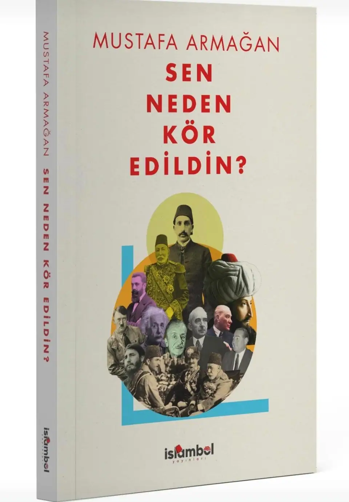
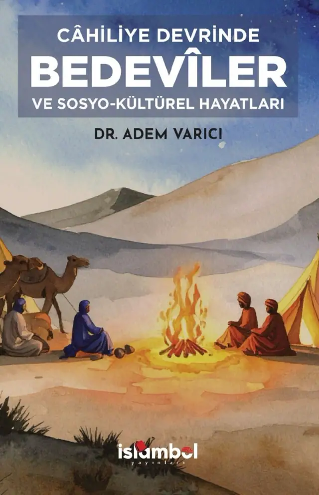
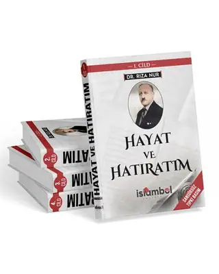
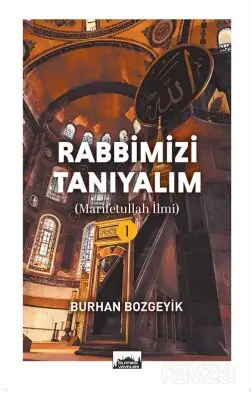
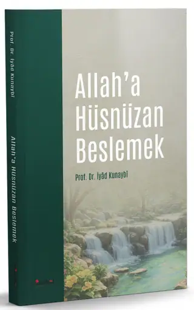
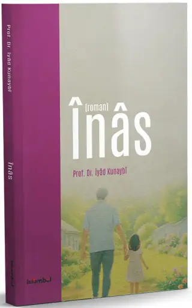

İslambol Yayınları
Tarihi belgeyle ve tanıklıkla okuyun
Osmanlı'nın son dönemi, Milli Mücadele ve Cumhuriyet'in ilk yıllarına dair hatırat, araştırma ve arşiv belgesi yayınları.

Öne çıkanSen Neden Kör Edildin? · Mustafa Armağan
İslambol Yayınları
Osmanlı'nın son dönemi, Milli Mücadele ve Cumhuriyet'in ilk yıllarına dair hatırat, araştırma ve arşiv belgesi yayınları.

Öne çıkanSen Neden Kör Edildin? · Mustafa Armağan
Katalog
Sipariş
Sipariş ve diğer sorular için yayınevine doğrudan ulaşabilirsiniz. Mesaj, kitabın adıyla hazır açılır.
0505 980 87 35 WhatsApp'tan sipariş verBu kitapların ilk sayfalarını sayfa çevirerek okuyabilirsiniz.
Yayınevinin son dönemde yayımladığı ve ön siparişe açtığı kitaplar.

Adem Varıcı

Halid el-Huseynan

Şeyhülislam Mustafa Sabri Efendi

Prof. Dr. Ali Seyyar

Dr. Seyfi Say

Dr. Seyfi Say

Bilal Adalı

Prof. Dr. Ali Seyyar
Katalogda en çok kitabı bulunan yazar ve araştırmacılar.
16 kitap
8 kitap
7 kitap
5 kitap
3 kitap

3 kitap
2 kitap

2 kitap


Yayınevi hangi alanlarda çalışıyor: kısa bir bakış.
Osmanlı'nın son dönemi, Milli Mücadele ve Cumhuriyet'in ilk yıllarına odaklanan hatırat, araştırma ve arşiv belgesi yayınları; yanında İslam düşüncesi eserleri ve Osmanlıca tıpkıbasımlar.
Kitaplar yayınevinin WhatsApp hattından ve listelenen kitabevi sitelerinden edinilebilir.
Güncel satış koşulları için ilgili satış sayfasına bakın.